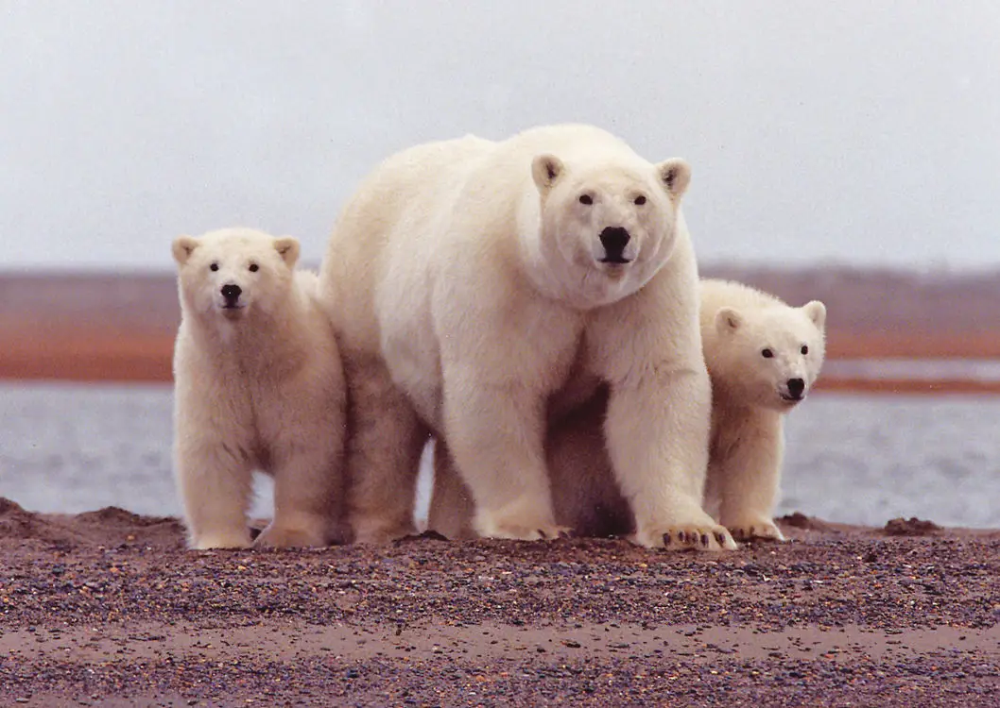
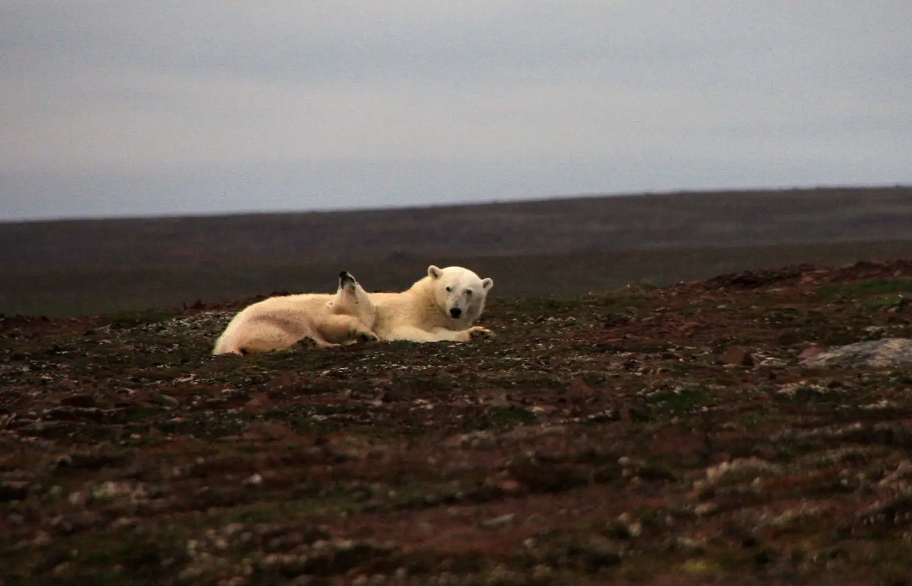

Фотогалерея
На сторінці використано інтерактивну Bootstrap-карусель. Зображення оформлені як локальні ілюстрації до теми білого ведмедя, тому сайт працює без інтернету.

Білий ведмідь у сніговому середовищі

Рух по морській кризі

Самка з ведмежатами

Життя біля льоду та води
